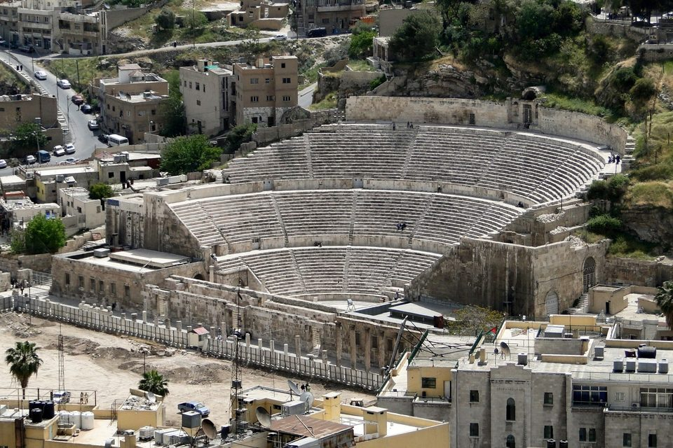

Jordan · Amman
Amman Roman Theatre & Downtown audio guide
8 stops · 10 min
This guide is free
Every recorded stop plays here.
Roman theatre and downtown Amman walk. Listen here, or get the Earwise app to play as you walk.
Stops
- 1
The square of the Roman city
In the Hashemite Plaza, between the Roman Theatre and the Odeon, facing the Citadel hill. This is stop 1 on the route.
Play0:00 / –:––Read along
Stand in the open square and turn slowly. Behind you, cut into the hillside, is a great Roman theatre. To one side is a smaller roofed theatre, the Odeon. And high above, on the ridge, are the columns of the Citadel. You are standing in the valley of ancient Philadelphia, the name the Greeks and Romans gave to Amman.
The name comes from a king. In the third century before Christ the city was renamed after Ptolemy the Second, called Philadelphus, the Greek ruler of Egypt. Later it joined the Decapolis, a loose league of Greek-speaking cities in the Roman east.
In the second century after Christ, Philadelphia was rebuilt in grand Roman style. The valley floor filled with a theatre, an odeon, public baths, a great fountain and colonnaded streets. This square, called the Hashemite Plaza, stands where the Roman forum once lay: the city's public meeting place, where people traded, argued and heard the news.
For centuries afterwards the city shrank. By the Ottoman period it was largely empty. Then, in 1878, the Ottoman authorities settled Circassian refugees here, Muslims who had left the North Caucasus. The first families lived near this very theatre, and one account says they used its fallen stones to build their houses. In 1921 Emir Abdullah made Amman the capital of the new Emirate of Transjordan, and the village began to grow into the city around you.
- 2
The great theatre
In the orchestra of the Roman Theatre, the flat half-circle in front of the stage. This is stop 2 on the route.
Play0:00 / –:––Read along
Stand in the middle of the half-circle and look up. Row after row of stone seats climbs the hill in front of you. This theatre could hold about six thousand people.
It was built in the reign of the emperor Antoninus Pius, who ruled from 138 to 161. We know this from a Greek inscription that honours him, found on the theatre itself. The builders cut the seats into the north face of the hill. One official account adds that the hillside had once been a burial ground.
One account suggests a practical reason for that north-facing slope: with the seats looking north, the sun would stay behind the audience and out of their eyes.
Try the sound. If someone you are with walks up the steps, speak to them in a normal voice from here. The steep rake of the seats carries the voice remarkably well, even to the highest rows.
According to Jordan's Department of Antiquities, restoration began in 1957, after which the theatre once again became a venue for cultural events.
- 3
Three tiers and a niche for the gods
High on the seats, near the top of the theatre, looking down at the stage. This is stop 3 on the route.
Play0:00 / –:––Read along
Take the climb slowly, and sit down when you reach the top. You have reached what theatregoers call the highest gallery, the cheapest and steepest seats in the house.
The seating is divided into three bands, and in Roman times your row showed your rank. According to Jordan's Department of Antiquities, the lowest band near the stage was kept for senators and included special seats of honour. The middle band was for citizens. The top band, where you are sitting, was for the poor, for foreigners, for slaves and for women.
Look along the very top of the theatre for a niche cut into the rock. The Department of Antiquities describes it as a shrine to the city's gods, Hercules and his mother. From above the cheapest seats, Hercules watched over every performance.
From up here you also share the view the Romans had. Straight ahead across the valley rises the Citadel hill, where the city's great temple stood.
- 4
Two museums in the theatre walls
At the side entrances of the theatre, by the doors of the two small museums. This is stop 4 on the route.
Play0:00 / –:––Read along
At ground level, on either side of the stage, are the old side passages of the theatre. Romans used them to reach the orchestra and the stage. The rooms behind them hold two small museums, set up by the Department of Antiquities.
One museum shows the traditional everyday life of the people of this land. The other shows traditional costume and jewellery, including fine embroidery and old jewellery. One official account adds that it also holds sixth-century mosaics from Madaba and Jerash.
It is worth stepping inside if the doors are open. The contrast is the point. Outside is the stone of the Roman city. Inside is the cloth and silver of the families who lived in these hills long after, and whose grandchildren live in the city around you.
- 5
The Odeon
On the lower seats of the Odeon, the small theatre on the east side of the plaza. This is stop 5 on the route.
Play0:00 / –:––Read along
This small theatre is the Odeon. The Department of Antiquities dates it to the same building period as the great theatre, begun around the year 130 and finished around 141.
It is intimate. Sources put its seating at about four to five hundred people. Count the rows below the walkway: the Department of Antiquities records nine rows in the lower section and seven above. Where the Roman stone did not survive, the restorers did not invent it. They restored the lower seats in 1986 and left the upper part as it was found.
An odeon was a hall for music, poetry and speeches rather than big plays. One official account suggests that this one was covered by a wooden roof or a tent, to protect the singers and the audience from sun and rain. Imagine the space closed in above you, the sound held in, the light low.
After the 1986 restoration, the Department of Antiquities brought the Odeon back into use for concerts and public events.
- 6
The fountain of the nymphs
On Quraysh Street, at the railing in front of the tall Roman wall with niches. This is stop 6 on the route.
Play0:00 / –:––Read along
The great wall in front of you, squeezed between shops and traffic, is the Nymphaeum: the public fountain of Roman Philadelphia, named for the nymphs, the spirits of springs and water.
It was built in the second century, in the same period as the theatres. One official account gives a completion date of 191. The Department of Antiquities says it stood where the city's two main streets crossed, and that it was built over the Amman stream itself, on four great vaults. Water came to it by channel from the springs of Ras al-Ain.
Picture it whole. The façade was about sixty-five metres long, shaped like half of an octagon. On the upper level there were three large niches and two rows of smaller ones. Statues are believed to have stood in them, against walls faced with marble. In front lay a pool believed to cover about six hundred square metres, three metres deep and constantly refilled with fresh water.
The fountain was more than a place to fill a jar. The Department of Antiquities describes it as a monument where citizens gathered for their daily water, and a place of leisure, especially for the young.
The stream it stood on has since dried up, and only part of the back wall survives. Houses and storerooms fill what was once the front courtyard. From 2014 to 2018, Jordanian university teams and technicians restored the monument with funding from the United States embassy and reopened it as an archaeological park.
- 7
The Grand Husseini Mosque
In the small square in front of the Grand Husseini Mosque, facing its pink-and-white stone front. This is stop 7 on the route.
Play0:00 / –:––Read along
This is the Grand Husseini Mosque, the Friday mosque of downtown Amman and one of the oldest places of prayer in the city. Around it the lanes of Al-Balad, the old town, crowd with juice stands, traders and passers-by.
The ground here holds layers of faith. Beneath it was a church of Byzantine Philadelphia; one official account suggests it may have been the city's cathedral. After the coming of Islam in the seventh century a mosque was built on the site. In the tenth century the geographer al-Maqdisi described a beautiful mosque at the end of the marketplace, its floor paved with mosaics.
The mosque you see is newer. After Emir Abdullah founded the Emirate of Transjordan in 1921, he ordered a new mosque here, in 1923 and 1924, on the ruins of the old one. He named it after his father, Sharif Hussein bin Ali, the leader of the Great Arab Revolt. It was one of the first buildings the young state put up in its new capital.
Over the main entrance, one account records, is a marble plaque with verses by the chief judge of the time, Sheikh Said al-Karmi, written to mark the building.
The mosque has been rebuilt and enlarged several times since. After a fire in 2019 it received a new pulpit and prayer niche, and in July 2024 a fourth Hashemite renovation was opened, which covered the inner courtyard with a glass roof.
For a century this square has also been a place where the city speaks. The square in front of the mosque became a historic gathering place for political meetings and marches, a tradition linked with Jordan's first National Conference held nearby in downtown Amman in 1928.
- 8
The gold souk and King Faisal Street
At the end of King Faisal Street near the mosque, where the lanes of the gold souk begin. This is stop 8 on the route.
Play0:00 / –:––Read along
Walk a few steps into the lanes and the light changes. Window after window glitters with gold: bracelets, chains, coins and heavy wedding sets. This is the gold souk. An official account places it between the Husseini Mosque and the Citadel and calls it Amman's famous gold market.
The wide street nearby is King Faisal Street, leading out from the mosque square. As Amman grew after its resettlement in 1878, traders arrived from across the Levant, and in 1909 the town established its first municipal council.
On the map
All 8 stop pins for this guide are marked. Open map